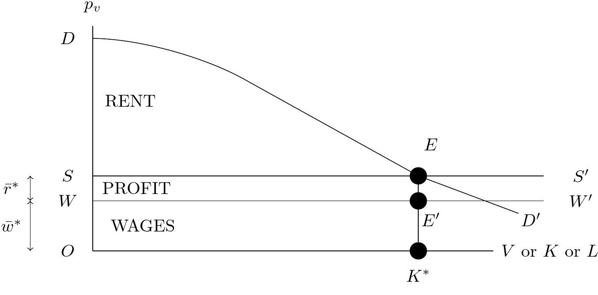
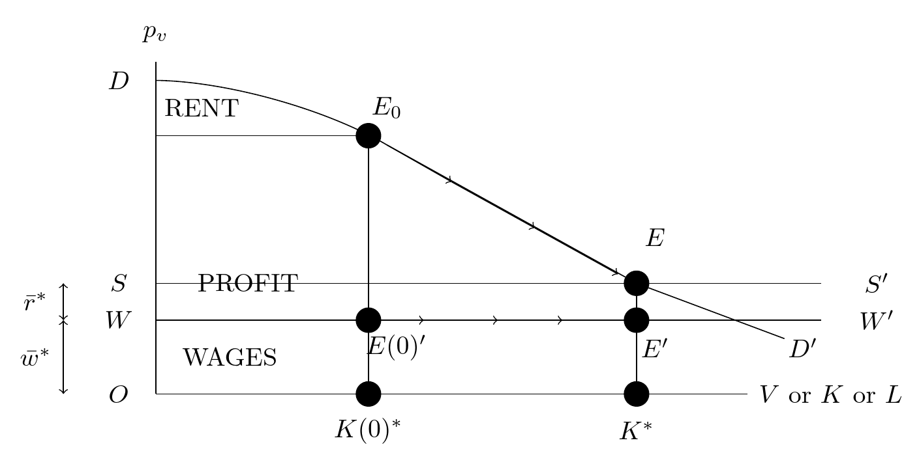
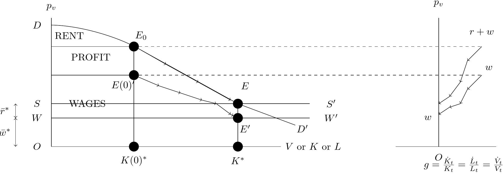

<!doctype html>
<html lang="en">

	<head>
		<meta charset="utf-8">

		<title>reveal.js - ClassHT 1</title>

		<link rel="stylesheet" href="plugin/reveal.css">
		<link rel="stylesheet" href="plugin/beige.css" id="theme">
        <link rel="stylesheet" href="plugin/monokai.css">
        <link rel="stylesheet" href="plugin/title-footer.css">
       
	</head>

	<body>

		<div class="reveal">

			<div class="slides">


                <!-- Slides are separated by three dashes (quick 'n dirty regular expression) -->
                <section data-markdown data-separator="\n---\n" data-separator-vertical="^\n--\n$">
                    <script type="text/template">
                        <!-- .slide: style="text-align: left;" -->
                        # History of Economic Analysis
                        ### Francesco Franco - Nova SBE

                        ---
                        ---                      

                        <!-- .slide: style="text-align: left;" -->
                        ### John Stuart Mill 1806-1873

                        More a philosopher than an economist, but he must be mentioned for he published Principles of Political Economy (1848),
                        which became the most important textbook in economics for at least 30 years which is the final revision of the classical ideas, especially Ricardo's.  


                        ---
                        

                        <!-- .slide: style="text-align: left;" -->
                        #### Scope of Political Economy

                        His main focus is distribution as he believed that production was mostly a technical, almost engineering science. Distribution, on the other hand, depended on human choices:

                        > **The laws and conditions of the production of wealth partake of the character of physical truths.
                        There is nothing optional or arbitrary in them**[...]It is not so with the Distribution of Wealth.
                        That is a matter of human institution solely. The things once there, mankind, individually or collectively,
                        can do with them as they like[...]**The distribution of wealth, therefore, depends on the laws and customs of society**.
                        The rules by which it is determined, are what the opinions and feelings of the ruling portion of the community make them,
                        and are very different in different ages and countries; and might be still more different, if mankind so chose.

                        > The opinions and feelings of mankind, doubtless, are not a matter of chance.
                        They are consequences of the fundamental laws of human nature, combined with the existing state of knowledge
                        and experience, and the existing condition of social institutions and intellectual and moral culture.
                        But the laws of the generation of human opinions are not within our present subject.
                        They are part of the general theory of human progress, a far larger and more difficult subject of inquiry
                        than political economy. We have here to consider, not the causes, but the consequences, of the rules according
                        to which wealth may be distributed. Those, at least, are as little arbitrary, and have as much
                        the character of physical laws, as the laws of production.
                        
                        ---

                        <!-- .slide: style="text-align: left;" -->
                        #### Price

                        Mill improved on the notion of price determination, introducing the idea of an equation.

                        Principles of Political Economy, Book III - Chapter I

                        > The proper mathematical analogy [between demand and supply] is that of an **equation**. 
                        If unequal at any moment, competition equalizes them, and the manner in which this is done is by an adjustment
                        of the value. If the demand increases, the value rises; if the demand diminishes, the value falls;
                        again, if the supply falls off, the value rises; and falls, if the supply is increased.
                        The rise or the fall continues until the demand and supply are again equal to one another:
                        and the value which a commodity will bring in any market is no other than the value which, in that market,
                        gives a demand just sufficient to carry off the existing or expected supply.

                        This is a step forward with respect to his predecessors although demand will not yet be well identified, in the sense where it comes from, as opposed
                        to supply (namely the cost of production).

                       
                        ---

                        <!-- .slide: style="text-align: left;" -->
                        #### Price in international trade

                        He refined Ricardo's international trade theory. Ricardo had left the relative price under trade undetermined and assumed
                        that the price would settle between the two countries' cost of production price.
                        Mill refers to the equality of demand and supply in the two countries (reciprocal demand as supply), anticipating a general equilibrium theory.

                        Principles of Political Economy - Book III - Chapter XIV

                        > The produce of a country exchanges for the produce of other countries at such values as are required in order
                        that the whole of her exports may exactly pay for the whole of her imports.
                         This law of International Values is but an extension of the more general law of Value,
                         which we called the Equation of Supply and Demand. We have seen that the value of a
                         commodity always so adjusts itself as to bring the demand to the exact level of the supply.
                         But all trade, either between nations or individuals, is an interchange of commodities,
                         in which the things that they respectively have to sell constitute also their means of purchase:
                         the supply brought by the one constitutes his demand for what is brought by the other.
                          So that supply and demand are but another expression for **reciprocal demand**;
                         and to say that value will adjust itself so as to equalize demand with supply, is, in fact, to say that it will adjust itself so as to equalize the demand on one side with the demand on the other.
                


                        
                        ---


                        <!-- .slide: style="text-align: left;" -->
                        
                        #### Long Run Development and the Stationary State

                        On the long run Mill is very much Ricardian, with the only difference that he saw the stationary state closer although postponed by technological improvement.
                        He also, very philosophically, believed that once the stationary state would be reached, men could finally focus on interesting aspects of life and not on economical ones.

                        Principles of Political Economy, Book IV, Chapter VI

                        > It must always have been seen, more or less distinctly, by political economists, that **the increase
                        of wealth is not boundless: that at the end of what they term the progressive state lies the stationary state**,
                        that all progress in wealth is but a postponement of this, and that each step in advance is an approach to it.
                        We have now been led to recognise that this ultimate goal is at all times **near** enough to be fully in view;
                        that we are always on the verge of it, and that if we have not reached it long ago,
                        it is because the goal itself flies before us. The richest and most prosperous countries would
                        very soon attain the stationary state, if no further improvements were made in the productive arts,
                        and if there were a suspension of the overflow of capital from those countries into the uncultivated or
                        ill- cultivated regions of the earth.
                        
                        > I cannot, therefore, regard the stationary state of capital and wealth
                        with the unaffected aversion so generally manifested towards it by political economists of the old school.
                        I am inclined to believe that it would be, on the whole, a very considerable improvement on our present condition[...]
                        **it is only in the backward countries of the world that increased production is still an important object:
                        in those most advanced, what is economically needed is a better distribution**, of which one indispensable means
                        is a stricter restraint on population. Levelling institutions, either of a just or of an unjust kind,
                        cannot alone accomplish it; they may lower the heights of society, but they cannot, of themselves,
                        permanently raise the depths.

                        ---


                        <!-- .slide: style="text-align: left;" -->
                        #### Long Run Develpmoent and the Stationary State


                        Principles of Political Economy, Book IV, Chapter II

                        > It is scarcely necessary to remark that **a stationary condition** of capital and population **implies no stationary state of human improvement**.
                        There would be as much scope as ever for all kinds of **mental culture**, and moral and social progress; as much room for improving
                        the **Art of Living**, and much more likelihood of its being improved, when minds ceased to be engrossed by the art of getting on.
                        Even the industrial arts might be as earnestly and as successfully cultivated, with this sole difference, that instead of serving
                        no purpose but the increase of wealth, industrial improvements would produce their legitimate effect, that of abridging labor.
                        Hitherto it is questionable if all the mechanical inventions yet made have lightened the day’s toil of any human being.
                        They have enabled a greater population to live the same life of drudgery and imprisonment, and an increased number of manufacturers
                        and others to make fortunes. They have increased the comforts of the middle classes. But they have not yet begun to effect
                        those great changes in human destiny, which it is in their nature and in their futurity to accomplish. Only when,
                        in addition to just institutions, the increase of mankind shall be under the deliberate guidance of judicious foresight,
                        can the conquests made from the powers of nature by the intellect and energy of scientific discoverers,
                        become the common property of the species, and the means of improving and elevating the universal lot. 

                        Here the philospher speaks :-) .

                        ---


                        <!-- .slide: style="text-align: left;" -->
                        #### Distribution and Taxation

                        Principles of Political Economy, Book V, Chapter II

                        > Setting out, then, from the maxim that equal sacrifices ought to be demanded from all,
                        we have next to inquire whether this is in fact done, by **making each contribute the same percentage on his pecuniary means**.
                        Many persons maintain the negative, saying that a tenth part taken from a small income is a heavier burthen than the same fraction deducted
                        from one much larger: and on this is grounded the very popular scheme of what is called a graduated property tax, viz. an
                        income tax in which the percentage rises with the amount of the income.

                        > The mode of adjusting these inequalities of pressure, which seems to be the most equitable, is that recommended by Bentham,
                         of leaving a **certain minimum of income, sufficient to provide the necessaries of life, untaxed**. Suppose 50l. 

                         So he is against strcit progressivity in income taxation and favours proportionality. However there is still progressivity for the very poor do not pay income tax.


                         Principles of Political Economy, Book V, Chapter V

                         > On the other hand, we may suppose this better distribution of property attained, by the joint effect of the prudence and frugality
                         of individuals, and of a system of legislation favouring equality of fortunes, so far as is consistent with the just claim of the individual
                         to the fruits, whether great or small, of his or her own industry. We may suppose, for instance [...], 
                         a limitation of the sum which any one person may acquire by gift or inheritance, to the amount sufficient to constitute
                         a moderate independence...
 
                        He favors inheritance taxes.

                        ---

                        <!-- .slide: style="text-align: left;" -->
                        ### Classical school
                        #### Canonical Model of Classical Growth and redistribution (Samuelson)
                        
                        We have reported through the above quotes that Adam Smith, David Ricardo, Thomas Robert Malthus, and John Stuart Mill shared a common dynamic model of  growth and distribution.
                        Samuelson presents us with model "stripped down to its minimial essentials" to carachterize in mathematical terms the ideas that were common to the Classis economists.
                        Ingredients that map the Classical economists writings:

                        1.  Real output $Q_t$ is divided interchangeably between consumption $C_t$ and
                            capital formation $\dot{K}_{t}$

                            $$Q_{t}=C_{t}+\dot{K}_{t}$$

                        2.  Output is produced by a production function $F$ involving land input $T$ and
                            a "dose" (Mill) of labor-cum-capital input $V_t=g(L_t,K_t)$

                        3.  Competition among

                            1.  landowners

                            2.  entrepreneurs who hire labor and need raw materials to work on
                                rented land

                            3.  owners of labor and capital goods


                        ---

                        <!-- .slide: style="text-align: left;" -->
                        #### Canonical Model

                        4.  Long run (natural prices and stationary state):

                            1.  workers' wage rate is ultimately determined by $\bar{w}^{*}$ the real
                                subsistence level

                            2.  profit rate $\bar{r}^{*}$ just low enough and just high enough to
                                cause capital to be maintained with zero net saving

                            The long run population (labor) and capital stock is such that the
                            **dimishing** return equates the return on the dose to `$\bar{w}^{*} + \bar{r}^{*}$`,
                            total rent is maximal and the equilibrium prevails forever
                            (stationary state).

                        5.  Mill added that **technological innovation**, could continue
                            in the long-run steady state, implying rising output.
                            In this model this happens if technical change is land-augmenting.

                        6.  The long-run equilibrium is **stable** in this version of the model with
                            factors that grow at the right rates, in the sense that the system,
                            if disturbed from it, will spontaneously return toward it.

                        ---

                        


                        <!-- .slide: style="text-align: left;" -->
                        ### Classical school
                        #### Model
                        
                        <center></center>
                        Verbal description

                        A strip of land declines continuously "eastward" in "fertility."Every grade of land is cultivated by composite doses of exactly the
                        same internal relative labor-capital proportions. Fixed
                        proportions of dose to land prevail at each grade's longitude, with return of product per doses applied declining continuously as we move
                        eastward.
                        
                        Then, when total available doses are few, all land to the east
                        is not worth cultivating; as doses increase in availability, they all
                        are applied ever further eastward (no change in density of doses on
                        prime westward land, with increased differential rent
                        earned on those prime acres). For each total of doses available, there
                        is an external frontier of zero-rent land: in the following graph the height of $DD'$ at any
                        given dose is the average product of output per unit of dose.

                        ---

                       

                        <!-- .slide: style="text-align: left;" -->
                    
                        #### Mathematical Model

                        Assume for simplicity a single sector and fixed
                        proportions between labor and capital. Implicitely there is a production
                        function where output $Q$ is produced with land fixed $T$ of various
                        grades

                        $$Q_{t}=F\left(L_{t},K_{t};T\right)$$ and a composite dose of labor and
                        capital goods, $$V_{t}=Min\left[L_{t},K_{t}\right]\label{eq:dose}$$

                        on each type of land. For simplicity we assume that one dose involves
                        one unit of labor and one unit of capital goods. We rewrite the
                        "production" function as
                        $$Q_{t}=f\left(V_{t}\right).\label{eq:production}$$ Also assume $f$ to
                        be concave which represents the decreasing returns to successive type of
                        land
                        
                        Output is divided in consumption and net capital formation
                        $$Q_{t}=C_{t}+\dot{K}_{t}\label{eq:resources}$$


                        ---

                        <!-- .slide: style="text-align: left;" -->
                        
                        #### Canonical Model

                        The non-rent real return to the
                        total dose $p_{V}$ expreseed in unit of output is given by

                        $$p_{V}=w+r=f'\left(V\right)\label{eq:price}$$
                         
                        where $w$ is the real
                        wage and $r$ is the real interest rate (or rental rate),
                        $f'\left(V\right)$ is the increment in product resulting from an extra
                        dose of $V$ applied to fixed lands.
                        
                        Total land rent, $R$, is given
                        residually by

                        $$R=f\left(V\right)-Vf'\left(V\right)$$

                        ---

                        <!-- .slide: style="text-align: left;" -->
                        
                        #### Canonical Model - Long Run

                        
                        In the Long Run
                        given the assumption on supply we have

                        `$$f'\left(V^{*}\right)=\bar{w}^{*}+\bar{r}^{*}=p_{V}$$`

                        `$$R^{*}=f\left(V^{*}\right)-V^{*}f'\left(V^{*}\right)$$`

                        `$$L^{*}=K^{*}=V^{*}$$`

                        `$$Q^{*}=C^{*}+0=f\left(V^{*}\right)$$`

                        ---


                        <!-- .slide: style="text-align: left;" -->
                        ### Classical school
                        #### Model
                        
                        <center></center>

                        ---

                        <!-- .slide: style="text-align: left;" -->
                        #### Canonical Model

                        -   $DD'$ curve of return to "doses" $V$ made up of balanced proportions
                            of $L$ and $K$applied to a fixed profile of lands.

                        -   $WW'$ is the log run supply of labor. It represents subsistence cost
                            of reproduction of labor in steady-state. (can easily accomodate
                            non-physiological components in the subsistence level). or By
                            choosing the right units the height of $WW$ represents the real wage
                            rate per unit of labor, $\bar{w}^{*}$ the labor power's cost of
                            reproduction in stationary equilibrium.

                        -   $SS'$ is the long-run supply of the composite dose. $SS'-WW'$ is the
                            long run profit long-run profit rate $\bar{r}^{*}$. It is such that
                            net saving are zero but allow replacement of the depreciated
                            capital. In some theories this rate was zero (after, of course, all
                            allowances for depreciation and replacement of principal have
                            separately been allowed).

                        ---
                        
                        <!-- .slide: style="text-align: left;" -->
                        #### Canonical Model

                        -   The residual of land rent is measured on the diagram by the area
                            $SED$. It is the residual of what is left of total product
                            `$OK^*ED$`  after paying capital and labor `$OK^*ES$`.

                        -   The present classical paradigm denies smooth substitutability
                            between $K$ and $L$ even in the Long Run.

                        -   From the horizontal long-run supply curves of the components, $WW'$
                            and $SS'$ ,comes the classical system's
                            determinate long-run distribution theory of the non-land factor
                            shares.

                        ---


                        <!-- .slide: style="text-align: left;" -->
                        
                        #### Canonical Model - Comparative Statitics


                        -   and increase in `$\bar{w}^{*}$` or `$\bar{r}^{*}$` must decrease
                            `$L^{*},K^{*},V^{*},Q^{*},C^{*}$` and maybe $R^{*}$

                        -   the shares `$\bar{r}^{*}K^{*}$` and `$\bar{w}^{*}L^{*}$` can move in
                            either direction relative to `$R^{*}$`

                        The Classical economists were focusing on the problem of distribution
                        between land rent, labor wages, and profits but their conceptual
                        framework, as interpreted here, could not deliver definitive answers.

                        ---

                        <!-- .slide: style="text-align: left;" -->
                        #### Canonical Model - Dynamics   

                    

                        When the real wage rate, $w$, is above the subsistence real wage rate,`$\bar{w}^{*}$`, the population grows, and grows at a greater rate the
                        greater is the excess in wage rates:
                        
                        `$$\epsilon\frac{\dot{L}_{t}}{L_{t}}=\lambda\left(w_{t}-\bar{w}^{*}\right)\label{eq:labor dynamics}$$`

                        `$$\lambda\left(0\right)=0,\lambda'>0$$`

                        $\epsilon$ is the slowness of the growth response of labor supply. 

                        ---

                        <!-- .slide: style="text-align: left;" -->
                        #### Canonical Model - Dynamics   

                        When $r$ exceeds `$\bar{r}^{*}$` the rate of saving-investment is positive:
                        
                        `$$\frac{\dot{K}_{t}}{K_{t}}=\sigma\left(r_{t}-\bar{r}^{*}\right)\label{eq:investment}$$`

                        `$$\sigma\left(0\right)=0,\sigma'>0$$`

                        The system is almost complete. If it always started with initial $L_0/K_0=1$ and aleays remained in this balanced configuration it would be determine the endogenous variables:
                        `$L_{t},K_{t},V_{t},w_{t},r_{t},p_{Vt},C_{t},Q_{t},R_{t}$`.

                        ---

                        <!-- .slide: style="text-align: left;" -->
                        #### Canonical Model - Dynamics simple  

                        First consider Ricardo case ("short-circuited") where population
                        adjusts istantly so that `$$w_{t}=\bar{w}^{*}$$` and $L_{t}$ always
                        adjusts to $K_{t}$, therefore 
                        
                        $$L_{t}=K_{t}=V_{t}$$
                        
                        $$p_{V}=\bar{w}^{*}+r_{t}$$

                        $$r_{t}=f'\left(K_{t}\right)-\bar{w}^{*}$$

                        `$$\frac{\dot{K}_{t}}{K_{t}}=\sigma\left(r_{t}-\bar{r}^{*}\right)$$` 

                        ---

                        <!-- .slide: style="text-align: left;" -->
                        #### Canonical Model - Dynamics simple  

                        Therefore the dynamics can be represnted as
                        
                        `$$\frac{\dot{K}_{t}}{K_{t}}=\sigma\left(f'\left(K_{t}\right)-\bar{w}^{*}-\bar{r}^{*}\right)$$` 

                        with

                        $K_{0}$ given. 
                        
                        and

                        $$Q_{t}=f\left(K_{t}\right)$$

                        $$C_{t}=f\left(K_{t}\right)-\dot{K}_{t}$$

                        $$R_{t}=f\left(K_{t}\right)-K_{t}f'\left(K_{t}\right)$$

                        ---

                        <!-- .slide: style="text-align: left;" -->
                        #### Canonical Model - Dynamics simple  

                        <center></center>
                        
                        ---

                        <!-- .slide: style="text-align: left;" -->
                        #### Canonical Model - Dynamics complete 

                        More realistic model assumes that labor as well as capital would
                        have to share in the transient surplus of the dose's return: how much of
                        the maximum "wage fund" that could go to wages rather than to profits was
                        never worked out. So assume the system starts at $L_{0},K_{0}$
                        sufficiently close to `$L^{*}$` and `$K^{*}$`. In this case it will forever
                        after grow with $K/L$ in the needed balance and with neither factor
                        redundantly free 
                        
                        $$L_{0}=K_{0}=V_{0}$$

                        `$$r_{t}=f'\left(K_{t}\right)-w_{t}$$ $$p_{V}=w_{t}+r_{t}$$`

                        `$$\frac{\dot{K}_{t}}{K_{t}}=\frac{\dot{L}_{t}}{L_{t}}=\sigma\left(r_{t}-\bar{r}^{*}\right)=\epsilon^{-1}\lambda\left(w_{t}-\bar{w}^{*}\right)$$`

                        so that
                        `$\sigma\left(f'\left(K_{t}\right)-w_{t}-\bar{r}^{*}\right)-\epsilon^{-1}\lambda\left(w_{t}-\bar{w}^{*}\right)=0$`
                        implicitely define $w_{t}=\omega\left(K;\epsilon\right)$

                        ---

                        <!-- .slide: style="text-align: left;" -->
                        #### Canonical Model - Dynamics complete small example
                    
                        `$$\left(f'\left(K_{t}\right)-w_{t}-\bar{r}^{*}\right)^{1+\beta}-\epsilon^{-1}\left(w_{t}-\bar{w}^{*}\right)^{1+\gamma}=0$$`
                       
                        `$$w_{t}=\frac{\bar{w}^{*}+\left(f'\left(K_{t}\right)-\bar{r}^{*}\right)\epsilon^{\frac{1}{1+\beta}}}{\left(1+\epsilon^{\frac{1}{1+\beta}}\right)}$$`
                        
                        ---


                        <!-- .slide: style="text-align: left;" -->
                        #### Model - labor adjustment

                        <center></center>

                        ---

                        <!-- .slide: style="text-align: left;" -->
                        #### Canonical Model - Dynamics complete 

                        Actually you can show that the model is stable starting from any condition. However sticking
                        to the fixed proportions classical assumptions the redundant factor has a price equal to zero
                        until it decreases to the existing quantity of the other factor. Formally competition implies

                        $$if \ K>L \ => r=0$$
                        $$if \ L>K \ => w=0$$
                        $$ w+r = f'(min{(K,L)})$$


                

                        ---

                        <!-- .slide: style="text-align: left;" -->
                        
                        ### Background

                        References:
                        - Sandmo Agnar, Chapter 6
                        - Screpanti and Zamagni  4.3

                        Marx analysis approach differs from the previous Classics economists by **"turning away" from the scientific revolution scope
                        to have a Political Economy analyzed through rational thinking and empirical observation**. **Mark adopts an Hegelian method 
                        in which the dynamic historical context is central**. In particular the dialectics of history that showed how the bourgeoisie (capitalists)
                        had substituted the previous feudal productive system (landlords) and how the proletariat (workers) would substitute the capitalistic system 
                        with a communist society. In his analysis productive forces dynamics (think of technology) are key to spur the changes.
                        But this will stop after the proletariat achieves predominance and an age of harmony would start.
                        Yet his focus is on the functionining of the capitalist society.

                        ---

                      

                     

                       

                        
                        <!-- .slide: style="text-align: left;" -->
                        ### References

                       
                        - Heilbroner, R. L. (1996). Teachings from the worldly philosophy. New York, W.W. Norton.

                        - Mill, J.S. (1848) "Principles of Political Economy with some of their Applications to Social Philosophy"
                        
                        - Screpanti, Ernesto & Zamagni, Stefano, 1995. "An Outline of the History of Economic Thought," OUP Catalogue, Oxford University Press

                        - Sandmo, Agnar.  (2011).  Economics evolving : a history of economic thought.  Princeton, N.J :  Princeton University Press.
                        
                        - P.A. Samuelson “The Canonical Classical Model of Political Economy.” Journal of Economic Literature 16, no. 4 (1978): 1415–1434.
                

                    </script>
                </section>

            </div>
		</div>

		<script src="plugin/reveal.js"></script>
        <script src="plugin/markdown.js"></script>
        <script src="plugin/highlight.js"></script>
        <script src="plugin/notes.js"></script>
        <script src="plugin/plugin.js"></script>
        <script src="plugin/math.js"></script>
        <script src="plugin/plugin.js"></script>
        <script src="plugin/menu.js"></script>
        <script src="plugin/pdfexport.js"></script>
		<script>

			Reveal.initialize({
				controls: true,
				progress: true,
				history: true,
                center: true,
                touch: true,

                menu: {
                    // Specifies which side of the presentation the menu will
                    // be shown. Use 'left' or 'right'.
                    side: 'left',

                    // Specifies the width of the menu.
                    // Can be one of the following:
                    // 'normal', 'wide', 'third', 'half', 'full', or
                    // any valid css length value
                    width: 'normal',

                    // Add slide numbers to the titles in the slide list.
                    // Use 'true' or format string (same as reveal.js slide numbers)
                    numbers: true,

                    // Specifies which slide elements will be used for generating
                    // the slide titles in the menu. The default selects the first
                    // heading element found in the slide, but you can specify any
                    // valid css selector and the text from the first matching
                    // element will be used.
                    // Note: that a section data-menu-title attribute or an element
                    // with a menu-title class will take precedence over this option
                    titleSelector: 'h1, h2, h3, h4, h5, h6',

                    // If slides do not have a matching title, attempt to use the
                    // start of the text content as the title instead
                    useTextContentForMissingTitles: false,

                    // Hide slides from the menu that do not have a title.
                    // Set to 'true' to only list slides with titles.
                    hideMissingTitles: false,

                    // Adds markers to the slide titles to indicate the
                    // progress through the presentation. Set to 'false'
                    // to hide the markers.
                    markers: true,

                    // Specify custom panels to be included in the menu, by
                    // providing an array of objects with 'title', 'icon'
                    // properties, and either a 'src' or 'content' property.
                    custom: false,

                    // Specifies the themes that will be available in the themes
                    // menu panel. Set to 'true' to show the themes menu panel
                    // with the default themes list. Alternatively, provide an
                    // array to specify the themes to make available in the
                    // themes menu panel, for example...
                    //
                    // [
                    //     { name: 'Black', theme: 'dist/theme/black.css' },
                    //     { name: 'White', theme: 'dist/theme/white.css' },
                    //     { name: 'League', theme: 'dist/theme/league.css' },
                    //     {
                    //       name: 'Dark',
                    //       theme: 'lib/reveal.js/dist/theme/black.css',
                    //       highlightTheme: 'lib/reveal.js/plugin/highlight/monokai.css'
                    //     },
                    //     {
                    //       name: 'Code: Zenburn',
                    //       highlightTheme: 'lib/reveal.js/plugin/highlight/zenburn.css'
                    //     }
                    // ]
                    //
                    // Note: specifying highlightTheme without a theme will
                    // change the code highlight theme while leaving the
                    // presentation theme unchanged.
                    themes: false,

                    // Specifies the path to the default theme files. If your
                    // presentation uses a different path to the standard reveal
                    // layout then you need to provide this option, but only
                    // when 'themes' is set to 'true'. If you provide your own
                    // list of themes or 'themes' is set to 'false' the
                    // 'themesPath' option is ignored.
                    themesPath: 'dist/theme/',

                    // Specifies if the transitions menu panel will be shown.
                    // Set to 'true' to show the transitions menu panel with
                    // the default transitions list. Alternatively, provide an
                    // array to specify the transitions to make available in
                    // the transitions panel, for example...
                    // ['None', 'Fade', 'Slide']
                    transitions: false,

                    // Adds a menu button to the slides to open the menu panel.
                    // Set to 'false' to hide the button.
                    openButton: true,

                    // If 'true' allows the slide number in the presentation to
                    // open the menu panel. The reveal.js slideNumber option must
                    // be displayed for this to take effect
                    openSlideNumber: false,

                    // If true allows the user to open and navigate the menu using
                    // the keyboard. Standard keyboard interaction with reveal
                    // will be disabled while the menu is open.
                    keyboard: true,

                    // Normally the menu will close on user actions such as
                    // selecting a menu item, or clicking the presentation area.
                    // If 'true', the sticky option will leave the menu open
                    // until it is explicitly closed, that is, using the close
                    // button or pressing the ESC or m key (when the keyboard
                    // interaction option is enabled).
                    sticky: false,

                    // If 'true' standard menu items will be automatically opened
                    // when navigating using the keyboard. Note: this only takes
                    // effect when both the 'keyboard' and 'sticky' options are enabled.
                    autoOpen: true,

                    // If 'true' the menu will not be created until it is explicitly
                    // requested by calling RevealMenu.init(). Note this will delay
                    // the creation of all menu panels, including custom panels, and
                    // the menu button.
                    delayInit: false,

                    // If 'true' the menu will be shown when the menu is initialised.
                    openOnInit: false,

                    // By default the menu will load it's own font-awesome library
                    // icons. If your presentation needs to load a different
                    // font-awesome library the 'loadIcons' option can be set to false
                    // and the menu will not attempt to load the font-awesome library.
                    loadIcons: true
                },

                dependencies:
                [
                    { src: 'plugin/title-footer.js', async: true, callback: function() { title_footer.initialize(); } }
                ],
                math: {
                    mathjax: 'https://cdn.jsdelivr.net/gh/mathjax/mathjax@2.7.8/MathJax.js',
                    config: 'TeX-AMS_HTML-full',
                    // pass other options into `MathJax.Hub.Config()`
                    TeX: { Macros: { RR: "{\\bf R}" } }
                    },
        
                chalkboard: {
                    boardmarkerWidth: 3,
                    chalkWidth: 2.5,
                    chalkEffect: 1,
                    src: null,
                    readOnly: undefined,
                    toggleChalkboardButton: { left: "90px", bottom: "30px", top: "auto", right: "auto" },
                    toggleNotesButton: { left: "60px", bottom: "30px", top: "auto", right: "auto" },
                    transition: 800,
                    theme: "whiteboard",
                    background: [ 'rgba(127,127,127,.1)' , path + 'img/whiteboard.png' ],
                    grid: { color: 'rgba(127,127,127,.1)', distance: 80, width: 0.01},
                    eraser: { src: path + 'img/sponge.png', radius: 20},
                    boardmarkers : [
                            { color: 'rgba(127,127,127,1)', cursor: 'url(' + path + 'img/boardmarker-black.png), auto'},
                            { color: 'rgba(30,144,255, 1)', cursor: 'url(' + path + 'img/boardmarker-blue.png), auto'},
                            { color: 'rgba(220,20,60,1)', cursor: 'url(' + path + 'img/boardmarker-red.png), auto'},
                            { color: 'rgba(50,205,50,1)', cursor: 'url(' + path + 'img/boardmarker-green.png), auto'},
                            { color: 'rgba(255,140,0,1)', cursor: 'url(' + path + 'img/boardmarker-orange.png), auto'},
                            { color: 'rgba(150,0,20150,1)', cursor: 'url(' + path + 'img/boardmarker-purple.png), auto'},
                            { color: 'rgba(255,220,0,1)', cursor: 'url(' + path + 'img/boardmarker-yellow.png), auto'}
                    ],
                    chalks: [
                            { color: 'rgba(255,255,255,0.5)', cursor: 'url(' + path + 'img/chalk-white.png), auto'},
                            { color: 'rgba(96, 154, 244, 0.5)', cursor: 'url(' + path + 'img/chalk-blue.png), auto'},
                            { color: 'rgba(237, 20, 28, 0.5)', cursor: 'url(' + path + 'img/chalk-red.png), auto'},
                            { color: 'rgba(20, 237, 28, 0.5)', cursor: 'url(' + path + 'img/chalk-green.png), auto'},
                            { color: 'rgba(220, 133, 41, 0.5)', cursor: 'url(' + path + 'img/chalk-orange.png), auto'},
                            { color: 'rgba(220,0,220,0.5)', cursor: 'url(' + path + 'img/chalk-purple.png), auto'},
                            { color: 'rgba(255,220,0,0.5)', cursor: 'url(' + path + 'img/chalk-yellow.png), auto'}
                    ]
                },
                

				plugins: [ RevealMarkdown, RevealHighlight, RevealNotes,RevealMath, RevealMenu, RevealChalkboard, PdfExport]
			});

		</script>

	</body>
</html>
